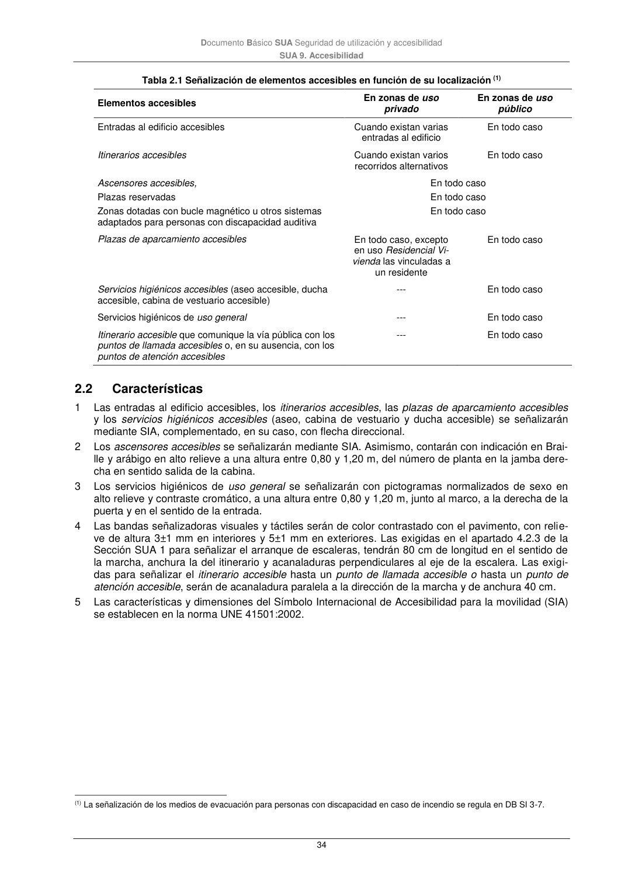

DB-SUA · 2.2 Características · versión 2022-06-14 · capa oficial
Formatos: JSON compacto · Markdown · PDF fuente
Ámbito del documento · texto del ámbito · documento y tablas
ID técnico a0122 · PDF pág. 34 · jerarquía no validada por persona · contrastado con el literal de la página 34 (marcador PDF); no validado por persona · padre: a0120
Características 1 Las entradas al edificio accesibles, los itinerarios accesibles, las plazas de aparcamiento accesibles y los servicios higiénicos accesibles (aseo, cabina de vestuario y ducha accesible) se señalizarán mediante SIA, complementado, en su caso, con flecha direccional. 2 Los ascensores accesibles se señalizarán mediante SIA. Asimismo, contarán con indicación en Brai- lle y arábigo en alto relieve a una altura entre 0,80 y 1,20 m, del número de planta en la jamba dere- cha en sentido salida de la cabina. 3 Los servicios higiénicos de uso general se señalizarán con pictogramas normalizados de sexo en alto relieve y contraste cromático, a una altura entre 0,80 y 1,20 m, junto al marco, a la derecha de la puerta y en el sentido de la entrada. 4 Las bandas señalizadoras visuales y táctiles serán de color contrastado con el pavimento, con relie- ve de altura 3±1 mm en interiores y 5±1 mm en exteriores. Las exigidas en el apartado 4.2.3 de la

PDF fuente redistribuible: copia fiel enlazada en esta página (SHA256 verificado).